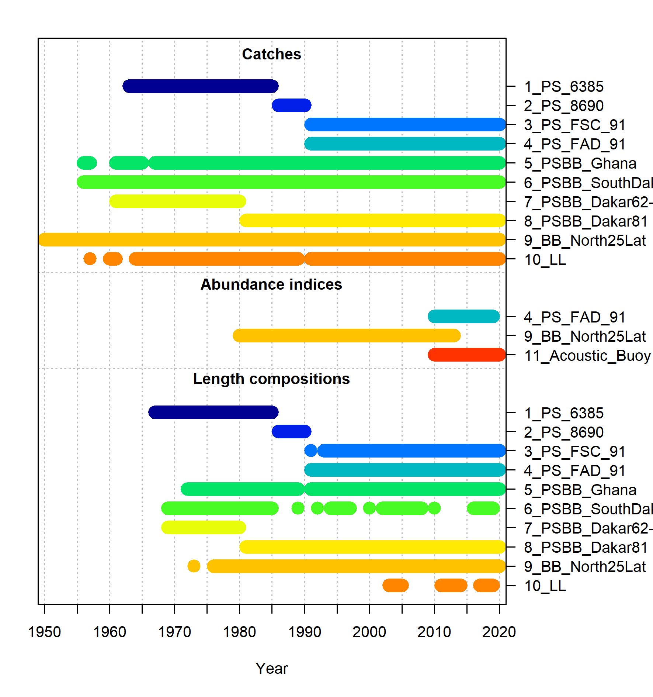

flowchart LR
subgraph B1["Operating model"]
direction TB
i1["Biological and <br> fishery model"]
f1["Data generation"]
end
subgraph B2["Management procedure"]
direction BT
i2["Estimation method"]
f2["Harvest control rule"]
end
f1 --> i2
f2 --Implementation--> i1
i1 --> f1
i2 --> f2
B1 --> i3["Performance metrics"]
style B1 fill:#d4f5ba
style B2 fill:#b9c8fc
style i3 fill:#fcf7b9
style i1 fill:#ffffff
style f1 fill:#ffffff
style i2 fill:#ffffff
style f2 fill:#ffffff
%% Set all nodes to black text
linkStyle default color:#000000
classDef blackText color:#000000;
class i1,f1,i2,f2,i3,B1,B2 blackText;
1 Introduction
The tropical tunas (TT) fishery, under the management of the International Commission for the Conservation of Atlantic Tuna (ICCAT), is undergoing a management strategy evaluation (MSE) process. This fishery mainly target bigeye (BET), skipjack (SKJ), and yellowfin (YFT) tunas.
There are three main components in an MSE process:
- Operating models (OMs): a collection of mathematical/statistical models that describe alternative hypotheses of the historical fishery dynamics and specifications for simulating the collection of data and implementation of management measures in the future;
- Candidate management procedures (CMPs): a set of proposed algorithms that generate management recommendations from fishery data and will be evaluated in the MSE;
- Performance metrics (PMs): statistics used to quantitatively evaluate the CMPs against specified management objectives.
The OMs, CMPs, and PMs are developed as a collaborative effort between scientists, decision-makers, and other stakeholders in the fishery.
1.1 About this document
This document describes the specifications for the OMs, CMPs, and PMs that have been proposed and developed for the TT fishery. It is a living document and will be continued to be updated so that it reflects the current state of the multi-stock TT MSE process. Members of the Tropical Tuna Species Group (TTSG) are encouraged to provide feedback, comments, or edits to any part of this document.
The document is written using the Quarto format and can edited in any text editor. The source document is available on the MSE GitHub repository. TTSG members can make edits to the document either directly in the online repository or by cloning the repository and submitting pull requests with their edits. Alternatively, they can email questions or comments to the authors. The former approach has the advantage that all comments, questions, and edits are immediately visible to all members of the TTSG. The Discussions feature on the Github repository can also be used to post questions, comments, or points for discussion related to any aspect of this document or the MSE process in general.
This document is available at the TT MSE homepage.
2 MSE framework
The R software has been used to developed the MSE code for the TT fishery. All code is open-source and can be found on the MSE GitHub repository.
The code developed for the TT MSE uses the FLBEIA framework. FLBEIA (Garcia et al., 2017) is an R package that has been developed for conducting bio-economic evaluation of fisheries management strategies. The software allows the bio-economic evaluation of a wide range of management strategies in a great variety of case studies such as multi-stock, multi-fleet, stochastic and seasonal configurations. FLBEIA is built using FLR libraries. FLR is a collaborative project oriented to develop quantitative fisheries management tools.
3 Stock assessment
In this section, we describe the main aspects of the last stock assessment models for BET, SKJ, and YFT, which were then used to condition the OMs. These assessments use the areas-as-fleets approach, which aims to account for the regional differences in fishing behavior and selectivity using a single-area model configuration (Waterhouse et al., 2014). These regions are shown in Figure 2.
3.1 Bigeye
The last stock assessment was conducted in 2021 (ICCAT, 2021) using the Stock Synthesis (SS3) platform (Methot and Wetzel, 2013). The data used in the BET assessment and the structure and assumptions of the assessment model are summarized in the sections below.
| Fleet code | Description | Region | CPUE included? |
|---|---|---|---|
| 1_PS_6485 | Purse seine (all fleets except Ghana, USA, and Venezuela) | R2/R1 | No |
| 2_PS_8690 | Purse seine (all fleets except Ghana, USA, and Venezuela) | R2/R1 | No |
| 3_PS_FSC_9119 | Purse seine free school (all fleets except Ghana, USA, and Venezuela) | R2/R1 | No |
| 4_PS_FAD_9119 | Purse seine FADs (all fleets except Ghana, USA, and Venezuela) | R2/R3 | Yes |
| 5_BBPS_Ghana | Ghana baitboat and purse seine | R2 | No |
| 6_BB_South_Dakar | Baitboat South Dakar (all fleets except Ghana) | R2s | No |
| 7_BB_North_Dakar_6280 | Baitboat North Dakar (all fleets except Ghana) | R2n | No |
| 8_BB_North_Dakar_8119 | Baitboat North Dakar (all fleets except Ghana) | R2n | No |
| 9_BB_North_Azores | Baitboat North Azores (all fleets except Ghana) | R1 | No |
| 10_Japan_LL_N | Longline North Japan | R1 | No |
| 11_Japan_LL_TRO | Longline Tropical Japan | R2 | Yes |
| 12_Japan_LL_S | Longline South Japan | R3 | No |
| 13_Other_LL_N | Longline North Other (all fleets except Japan and Chinese Taipei) | R1 | No |
| 14_Other_LL_TRO | Longline Tropical Other (all fleets except Japan and Chinese Taipei) | R2 | No |
| 15_Other_LL_S | Longline South Other (all fleets except Japan and Chinese Taipei) | R3 | No |
| 16_CTP_LL_N | Longline North Chinese Taipei | R1 | No |
| 17_CTP_LL_TRO | Longline Tropical Chinese Taipei | R2 | No |
| 18_CTP_LL_S | Longline South Chinese Taipei | R3 | No |
| 19_RR_West | RR West Atlantic USA, Canada, UK-Sta Helena | R1 | No |
| 20_HL_BRA | Handline Brazil | R2 | No |
| 21_PS_West | Purse seine West Atlantic (USA, Venezuela) | R1 | No |
| 22_OTH | Other | R1/R2/R3 | No |
3.1.1 Data
The period covered was from 1950 to 2019. The assessment mainly used landings data from longline (LL), purse seine (PS), and baitboat (BB) fleets, with a total of 22 fleets included in the model (Table 1 and Figure 3). There were two indices of abundance: one derived from echosounder information from buoys and one derived from the LL Japan in region 2 (Figure 4). The catchability coefficients for the CPUE indices were assumed to be time-invariant.
Length composition data for most fleets (excluding handline Brazil) were included in the model (Figure 3). The effective sample size (ESS) for the length composition data was established by adjusting ESS until unity was reached between modeled ESS and the Francis suggested sample size (Francis, 2011).
3.1.2 Model structure
The model was configured yearly with four seasons per year, one sex, one area, and a total of 11 age groups (0 to 10+). The spawning timing was January 1st.
3.1.3 Biological Parameters
Natural mortality was age-specific and parametrized following Then et al. (2015), assuming a maximum age of 17, 20, or 25 years. Maturity-at-age was knife-edge, with 50% at age-3 and 100% thereafter. Fecundity was proportional to body weight. Growth was parametrized following the Richards curve (Richards, 1959). Variability of lengths-at-age was assumed to be a function of mean length-at-age. Figure 5 shows a summary of the biological parametrization.
3.1.4 Stock-Recruitment
Expected recruitment to age-0 was calculated from the total spawning stock biomass using the Beverton-Holt stock-recruit function. Recruitment settlement was assumed to occur at month 1, 4, 7, and 10 (i.e., start of every season). The standard error for the log-normally distributed recruitment deviations (sigmaR) was fixed to 0.2, 0.4, or 0.6. Steepness was fixed to values of 0.7, 0.8, or 0.9.
3.1.5 Selectivity
Selectivity was modelled as a function of length and was assumed to be time-invariant. Dome-shaped selectivity was allowed for several LL and BB fleets, while cubic splices were used for PS and some BB fleets.
3.2 Skipjack
The last stock assessment was conducted in 2022 (ICCAT, 2022) using the SS3 platform. The data used in the SKJ assessment and the structure and assumptions of the assessment model are summarized in the sections below.
| Fleet code | Description | Region | CPUE included? |
|---|---|---|---|
| 1_PS_6385 | Purse seine EU (Spain, France) | East R1/R2/R3 | No |
| 2_PS_8690 | Purse seine EU (Spain, France) | East R1/R2/R3 | No |
| 3_PS_FSC_91 | Purse seine free school | East R1/R2/R3 | No |
| 4_PS_FAD_91 | Purse seine FADs | East R1/R2/R3 | Yes |
| 5_PSBB_Ghana | Ghana baitboat and purse seine | East R1/R2/R3 | No |
| 6_PSBB_SouthDakar | Baitboat South Dakar | East R2s/R3 | No |
| 7_PSBB_Dakar62-80 | Baitboat Dakar | East R2n | No |
| 8_PSBB_Dakar81 | Baitboat Dakar | East R2n | No |
| 9_BB_North25Lat | Baitboat North25 | East R1 | Yes |
| 10_LL | All longline fleets | East R1/R2/R3 | No |
| 11_Acoustic_Buoy | Acoustic buoy index | East R1/R2/R3 | Yes |
3.2.1 Data
The period covered was from 1950 to 2020. The assessment mainly used landings data from LL, PS, and BB fleets, with a total of 11 fleets included in the model (Table 2 and Figure 6). There were a total of three indices of abundance available for the assessment: one derived from echosounder information from buoys (\(11\_Acoustic\_Buoy\)), one derived from PS operating on fishing aggregating devices catch and effort information (\(4\_PS\_FAD\_91\)), and one derived from the BB in region 1 (Figure 7). The \(4\_PS\_FAD\_91\) and \(11\_Acoustic\_Buoy\) indices were not included together in a model run. The catchability coefficients for the CPUE indices were assumed to be time-invariant.

Length composition data for all fleets were included in the model (Figure 6). The ESS for the length composition data was established by adjusting ESS until unity was reached between modeled ESS and the Francis suggested sample size (Francis, 2011).

3.2.2 Model structure
The model was configured yearly with four seasons per year, one sex, one area, and a total of 7 age groups (0 to 6+). The spawning timing was January 1st.
3.2.3 Biological Parameters
Natural mortality (M) was age-specific and parametrized following Lorenzen (1996), with a reference M equal to 0.55 for age 6. Maturity-at-length followed a logistic function. Fecundity was proportional to body weight. Growth was parametrized following the von Bertalanffy curve (Schnute, 1981) with three different set of parameters, which also impacted the derived M-at-age values. Variability of lengths-at-age was assumed to be a function of mean length-at-age. Figure 8 shows a summary of the biological parametrization.
3.2.4 Stock-Recruitment
Expected recruitment to age-0 was calculated from the total spawning stock biomass using the Beverton-Holt stock-recruit function. Recruitment settlement was assumed to occur at month 1, 4, 7, and 10 (i.e., start of every season). sigmaR was fixed to 0.4 and steepness was fixed to values of 0.7, 0.8, or 0.9.
3.2.5 Selectivity
Selectivity was modelled as a function of length and was assumed to be time-invariant. Dome-shaped selectivity was allowed for most fleets, while a logistic shape was modelled for the LL fleet.
3.3 Yellowfin
The last stock assessment was conducted in 2024 (ICCAT, 2024) using the SS3 platform. The data used in the YFT assessment and the structure and assumptions of the assessment model are summarized in the sections below.
| Fleet code | Description | Region | CPUE included? |
|---|---|---|---|
| 1_PS_ESFR_6585 | Purse seine EU (Spain, France) | R2/R1 | No |
| 2_PS_ESFR_8690 | Purse seine EU (Spain, France) | R2/R1 | No |
| 3_PS_ESFR_FS_9122 | Purse seine free school EU (Spain, France) | R2/R1 | Yes |
| 4_PS_ESFR_FOB_9122 | Purse seine FADs EU (Spain, France) | R2/R3 | Yes |
| 5_BB_PS_Ghana_6522 | Ghana baitboat and purse seine | R2 | No |
| 6_BB_area2_Sdak | Baitboat South Dakar | R2s | No |
| 7_BB_DAKAR_6280 | Baitboat North Dakar | R2n | No |
| 8_BB_DAKAR_8122 | Baitboat North Dakar | R2n | No |
| 9_North_BB_Azores | Baitboat North Azores | R1 | No |
| 10_Japan_LL_N | Longline North Japan | R1 | Yes |
| 11_Japan_LL_TRO | Longline Tropical Japan | R2 | Yes |
| 12_Japan_LL_S | Longline South Japan | R3 | Yes |
| 13_Other_LL_N | Longline North Other | R1 | No |
| 14_Other_LL_TRO | Longline Tropical Other | R2 | No |
| 15_Other_LL_S | Longline South Other | R3 | No |
| 16_HL_Braz_N | Handline Brazil | R2 | No |
| 17_US_RR | RR West Atlantic | R1 | No |
| 18_PS_WEST | Purse seine West Atlantic | R1 | No |
| 19_OTH_OTH | Other | R1/R2/R3 | No |
3.3.1 Data
The period covered was from 1950 to 2022. The assessment mainly used landings data from LL, PS, and baitboat BB fleets, with a total of 19 fleets included in the model (Table 3 and Figure 9). There were a total of five indices of abundance available for the assessment: one derived from PS operating on floating objects catch and effort data (\(4\_PS\_ESFR\_FOB\_9122\)), one derived from PS operating on free schools catch and effort data (\(4\_PS\_ESFR\_FS\_9122\)), and three indices derived from LL for region 1, 2, and 3 (Figure 10). The catchability coefficients for the CPUE indices were assumed to be time-invariant.
Length composition data for most fleets were included in the model (Figure 9). The ESS for the length composition data was established by adjusting ESS until unity was reached between modeled ESS and the Francis suggested sample size (Francis, 2011). Conditional age-at-length (CAAL) data was also included for four fleets (Figure 9).

3.3.2 Model structure
The model was configured yearly with four seasons per year, one sex, one area, and a total of 11 age groups (0 to 10+). The spawning timing was January 1st.
3.3.3 Biological Parameters
Natural mortality (M) was age-specific and parametrized following Lorenzen (1996), with a reference M (\(M_{ref}\)) equal to 0.3 for age 7 assuming a maximum age of 18 years (Hamel and Cope, 2022). Alternative \(M_{ref}\) values of 0.25 and 0.35 were also tested. Maturity-at-length followed a logistic function. Fecundity was proportional to body weight. Growth was parametrized following the Richards curve (Richards, 1959). Variability of lengths-at-age was assumed to be a function of mean length-at-age. Figure 11 shows a summary of the biological parametrization.
3.3.4 Stock-Recruitment
Expected recruitment to age-0 was calculated from the total spawning stock biomass using the Beverton-Holt stock-recruit function with flat-top beyong unfished biomass. Recruitment settlement was assumed to occur at month 1, 4, 7, and 10 (i.e., start of every season). sigmaR was freely estimated and steepness was fixed to 0.7, 0.8, or 0.9.
3.3.5 Selectivity
Selectivity was modelled as a function of length and was assumed to be time-invariant. Dome-shaped selectivity was modelled for most LL and BB fleet, while cubic splines was modelled for the PS fleets.
4 Operating Models
4.1 Reference OMs
In 2025, the TTSG developed a set of OMs considering the axes of uncertainty evaluated in the stock assessment for each stock (Table 4). A factorial combination of these axes produced a total of 4374 models, which were the Reference OMs in the MSE.
| Description | Code | |
|---|---|---|
| Bigeye | ||
| Axis 1 | Maximum age for natural mortality: 17, 20, 25 | M17, M20, M25 |
| Axis 2 | Steepness: 0.7, 0.8, 0.9 | h0.7, h0.8, h0.9 |
| Axis 3 | sigmaR: 0.2, 0.4, 0.6 | sigmaR0.2, sigmaR0.4, sigmaR 0.6 |
| Skipjack | ||
| Axis 1 | Inclusion of index: acoustic buoy, PSFAD catch and effort | noPS, noBuoy |
| Axis 2 | Growth quantile: 0.25, 0.5, 0.75 | 25thGrowth, 50thGrowth, 75thGrowth |
| Axis 3 | Steepness: 0.7, 0.8, 0.9 | h0.7, h0.8, h0.9 |
| Yellowfin | ||
| Axis 1 | M reference value: 0.35, 0.3, 0.25 | highM, midM, lowM |
| Axis 2 | Steepness: 0.7, 0.8, 0.9 | h07, h08, h09 |
4.2 Robustness OMs
The TT MSE evaluated the impacts of potential decrease in the mean recruitment level in future years. To do so, the \(R_0\) parameter of the Beverton-Holt relationship decrased by 20% in the simulation period (Figure 12) from the estimated values in the Reference OMs for the three stocks. This set of runs with smaller \(R_0\) is our Robustness OMs.
4.3 Validation
4.3.1 Summary Report
Summary reports summarize the estimated parameters, the calculated biological reference points, and the estimated stock status relative to those reference points per stock (Table 5).
| Stock | Report |
|---|---|
| Bigeye | See Summary report |
| Skipjack | See Summary report |
| Yellowfin | See Summary report |
4.3.2 Diagnostic Reports
Individual diagnostic reports with objective function values and plots of model fits and patterns in residuals are available for each of the Reference OMs. Table 6 presents the diagnostics reports for all models in the uncertainty grid for each stock.
4.4 Conditioning
The Reference OMs were conditioned in FLBEIA with the same biological configuration. The conditioned fleet structure in the OMs is shown in Table 7.
| Fleet | Description | Bigeye | Skipjack | Yellowfin |
|---|---|---|---|---|
| PS | Purse seine, divided in two metiers: FSC (free school) and LS (log school) | |||
| PSBB_GH | Purse seine and baitboat Ghana | |||
| Dakar_BB | Dakar baitboat | |||
| North_BB | North baitboat | |||
| JP_LL | Japan longline | |||
| Other_LL | Other longline | |||
| CTP_LL | Chinese Taipei longline | |||
| RR_US | RR U.S. | |||
| HL_Bra | Handline Brazil | |||
| West_PS | West purse seine | |||
| Others | Other gears |
The historical period in the MSE corresponds to the years covered in the assessment model (Figure 12). On the other side, the simulation period corresponds to the years when the harvest control rules (HCR) are evaluated. The simulation period started in 2023 and ended in 2050. Since the YFT and SKJ assessments ended prior to 2023, some initial runs were needed for those stocks assuming average catches from the last three years (Figure 12).
%%{
init: {
'theme': 'default',
'themeVariables': {
'sectionBkgColor': '#dca06d',
'altSectionBkgColor': '#a55b4b',
'sectionBkgColor2': '#b184b3',
'taskBkgColor': 'lightgrey',
'taskBorderColor': 'black',
'taskTextColor': 'black',
'activeTaskBkgColor': 'white',
'activeTaskBorderColor': 'black',
'doneTaskBkgColor': 'lightgrey',
'doneTaskBorderColor': 'black'
}
}
}%%
gantt
dateFormat YYYY-MM-DD
section Bigeye
End of historical period :done, a1, 2017-01-01, 3y
Initial runs :active, a2, after a1 , 3y
Start of simulation period:after a2, 6y
section Skipjack
End of historical period :done, b1, 2017-01-01, 4y
Initial runs :active, b2, after b1 , 2y
Start of simulation period:after b2, 6y
section Yellowfin
End of historical period :done, c1, 2017-01-01, 6y
Start of simulation period:after c1, 6y
todayMarker off
4.4.1 Observation error model
Autocorrelation in CPUE residuals were introduced in the historical and simulation periods for all the Reference OMs based on the calculated autocorrelation coefficient at lag 1 (Figure 13).
5 Management Procedure
Simulated data was included in a stochastic surplus production model in continuous time (SPiCT). SPiCT is a full state-space model, where biomass and fishing dynamics are modelled as states, which are observed indirectly through biomass indices and commercial catches sampled with error (Pedersen and Berg, 2017). SPiCT calculates maximum sustainable yield (MSY) reference points and is able to make short-term projections. SPiCT is the estimation method in the MSE.
Per stock, a total allowable catch (TAC) is derived from a HCR (Figure 14). We evaluated a total of 9 HCRs produced by the combinations of \(F_{tgt}\) and \(B_{thr}\) shown in Figure 15. \(B_{lim}=0.4\times B_{msy}\) and \(F_{mim}=0.1\times F_{msy}\) for all cases.
In a multi-stock framework, stock-specific advice can be conflicting when different stocks are caught within the same fishery. Therefore, the annual management advice was produced based on the minimum effort, following the FcubEcon approach (Hoff et al., 2010), among the three stocks. A summary of these steps is shown in Figure 16.
flowchart TB
subgraph BET["<b>Bigeye MP</b>"]
direction TB
bet1["SSB<sub>BET</sub>"]
bet2["TAC<sub>BET</sub>"]
bet3["QS<sub>f,BET</sub>"]
bet4["Quota<sub>f,BET</sub>"]
end
subgraph SKJ["<b>Skipjack MP</b>"]
direction TB
skj1["SSB<sub>SKJ</sub>"]
skj2["TAC<sub>SKJ</sub>"]
skj3["QS<sub>f,SKJ</sub>"]
skj4["Quota<sub>f,SKJ</sub>"]
end
subgraph YFT["<b>Yellowfin MP</b>"]
direction TB
yft1["SSB<sub>YFT</sub>"]
yft2["TAC<sub>YFT</sub>"]
yft3["QS<sub>f,YFT</sub>"]
yft4["Quota<sub>f,YFT</sub>"]
end
bet5["E<sub>f,BET</sub>"]
skj5["E<sub>f,SKJ</sub>"]
yft5["E<sub>f,YFT</sub>"]
HCR["E<sub>f</sub>=min(E<sub>f,BET</sub>,E<sub>f,SKJ</sub>,E<sub>f,YFT</sub>)"]
bet7["Catch<sub>f,BET</sub>"]
skj7["Catch<sub>f,SKJ</sub>"]
yft7["Catch<sub>f,YFT</sub>"]
bet1 --HCR<sub>BET</sub>--> bet2 --> bet4
bet3 --> bet4 --> bet5
bet5 --> HCR
skj1 --HCR<sub>SKJ</sub>--> skj2 --> skj4
skj3 --> skj4 --> skj5
skj5 --> HCR
yft1 --HCR<sub>YFT</sub>--> yft2 --> yft4
yft3 --> yft4 --> yft5
yft5 --> HCR
HCR --> bet7
HCR --> skj7
HCR --> yft7
style BET fill:#ffffff
style bet1 opacity:0.5,fill:#dca06d
style bet2 opacity:0.5,fill:#dca06d
style bet3 opacity:0.5,fill:#dca06d
style bet4 opacity:0.5,fill:#dca06d
style bet5 opacity:0.5,fill:#dca06d
style bet7 opacity:0.5,fill:#dca06d
style SKJ fill:#ffffff
style skj1 opacity:0.5,fill:#a55b4b
style skj2 opacity:0.5,fill:#a55b4b
style skj3 opacity:0.5,fill:#a55b4b
style skj4 opacity:0.5,fill:#a55b4b
style skj5 opacity:0.5,fill:#a55b4b
style skj7 opacity:0.5,fill:#a55b4b
style YFT fill:#ffffff
style yft1 opacity:0.5,fill:#b184b3
style yft2 opacity:0.5,fill:#b184b3
style yft3 opacity:0.5,fill:#b184b3
style yft4 opacity:0.5,fill:#b184b3
style yft5 opacity:0.5,fill:#b184b3
style yft7 opacity:0.5,fill:#b184b3
style HCR fill:#ffffff
%% Set all nodes to black text
linkStyle default color:#000000
classDef blackText color:#000000;
class bet1,bet2,bet3,bet4,bet5,bet7,skj1,skj2,skj3,skj4,skj5,skj7,yft1,yft2,yft3,yft4,yft5,yft7,HCR,BET,SKJ,YFT blackText;
6 Performance Metrics
15 PMs have been developed for the TT MSE (Table 8) and are grouped into four types:
Status: metrics related to stock status
Safety: metrics related to the probability of the stock not falling below the biological reference points
Yield: metrics related to the catch in the projection years
Stability: metrics related to the variation in the catches or TAC between management cycles
Each PM was calculated for every Reference OM. Examples of each PM is given below.
| Type | Metric | Symbol | Description |
|---|---|---|---|
| Status | Minimum spawner biomass relative to \(B_{msy}\) | \(minB\) | Minimum \(B/B_{msy}\) value |
| Status | Mean spawner biomass relative to \(B_{msy}\) | \(meanB\) | Geometric mean of \(B/B_{msy}\) |
| Status | Mean fishing mortality relative to \(F_{msy}\) | \(meanF\) | Geometric mean of \(F/F_{msy}\) |
| Status | Probability (%) of being in the Kobe green quadrant | \(pGreen\) | Proportion of years in green quadrant (see Figure 14) |
| Status | Probability (%) of being in the Kobe red quadrant | \(pRed\) | Proportion of years in red quadrant (see Figure 14) |
| Safety | Probability (%) of \(B>B_{lim}\) | \(pBlim\) | Proportion of years that \(B>B_{lim}\) |
| Safety | Probability (%) of \(B_{lim}<B<B_{msy}\) | \(pBmsy\) | Proportion of years that \(B_{lim}<B<B_{msy}\) |
| Yield | Mean catch (short term) | \(Csht\) | Mean catch from 1 to 3 years |
| Yield | Mean catch (medium term) | \(Cmed\) | Mean catch from 5 to 10 years |
| Yield | Mean catch (long term) | \(Clon\) | Mean catch from 15 to 28 years |
| Stability | Mean absolute proportional change (%) in catch | \(Cc\) | Mean of \(\mid\frac{C_y - C_{y-1}}{C_{y-1}}\mid\) |
| Stability | Standard deviation in catch | \(Csd\) | Catch standard deviation |
| Stability | Probability (%) of shutdown | \(pShw\) | Proportion of years that TAC=0 |
| Stability | Probability (%) of TAC change over a certain level | \(pTX\) | Proportion of management cycles when the ratio of change \(\frac{TAC_y - TAC_{y-1}}{TAC_{y-1}} > 10\%\) |
| Stability | Maximum amount of TAC change (%) between management periods | \(maxTc\) | Maximum ratio of TAC change |
6.1 Examples
6.1.1 Status
6.1.2 Safety
6.1.3 Yield
6.1.4 Stability
7 Results
7.1 Bigeye
| Ftgt | Bthr |
Status
|
Safety
|
Yield
|
Stability
|
|||||||||||
|---|---|---|---|---|---|---|---|---|---|---|---|---|---|---|---|---|
| minB | meanB | meanF | pGreen | pRed | pBlim | pBmsy | Csht | Cmed | Clon | Cc | Csd | pShw | pTX | maxTc | ||
| 0.8 | 0.8 | 1.00 | 1.23 | 0.82 | 81% | 0% | 100% | 4% | 69,976 | 83,791 | 77,859 | 1% | 10,399 | 0% | 38% | 25% |
| 0.8 | 1.0 | 1.00 | 1.23 | 0.82 | 81% | 0% | 100% | 4% | 69,976 | 83,791 | 77,832 | 1% | 10,628 | 0% | 38% | 25% |
| 0.8 | 1.2 | 1.00 | 1.24 | 0.81 | 81% | 0% | 100% | 0% | 69,647 | 83,557 | 77,107 | 1% | 11,193 | 0% | 50% | 25% |
| 1.0 | 0.8 | 0.76 | 1.06 | 0.98 | 37% | 26% | 100% | 41% | 73,552 | 91,616 | 79,961 | 1% | 13,054 | 0% | 62% | 25% |
| 1.0 | 1.0 | 0.77 | 1.07 | 0.96 | 39% | 26% | 100% | 37% | 73,453 | 91,539 | 79,596 | 0% | 13,677 | 0% | 62% | 25% |
| 1.0 | 1.2 | 0.80 | 1.10 | 0.91 | 44% | 19% | 100% | 33% | 71,927 | 90,746 | 78,654 | 0% | 14,336 | 0% | 62% | 25% |
| 1.2 | 0.8 | 0.63 | 0.94 | 1.09 | 26% | 48% | 100% | 48% | 74,915 | 94,844 | 81,856 | 0% | 14,956 | 0% | 62% | 25% |
| 1.2 | 1.0 | 0.64 | 0.96 | 1.06 | 30% | 41% | 100% | 46% | 74,569 | 94,430 | 80,985 | 0% | 15,222 | 0% | 75% | 25% |
| 1.2 | 1.2 | 0.70 | 1.01 | 1.00 | 35% | 33% | 100% | 41% | 73,338 | 93,496 | 80,624 | 0% | 15,425 | 0% | 75% | 25% |
7.2 Skipjack
| Ftgt | Bthr |
Status
|
Safety
|
Yield
|
Stability
|
|||||||||||
|---|---|---|---|---|---|---|---|---|---|---|---|---|---|---|---|---|
| minB | meanB | meanF | pGreen | pRed | pBlim | pBmsy | Csht | Cmed | Clon | Cc | Csd | pShw | pTX | maxTc | ||
| 0.8 | 0.8 | 1.39 | 2.04 | 0.29 | 100% | 0% | 100% | 0% | 179,980 | 222,733 | 210,975 | 1% | 26,812 | 0% | 44% | 25% |
| 0.8 | 1.0 | 1.39 | 2.05 | 0.29 | 100% | 0% | 100% | 0% | 179,980 | 222,733 | 210,917 | 1% | 27,015 | 0% | 44% | 25% |
| 0.8 | 1.2 | 1.39 | 2.06 | 0.28 | 100% | 0% | 100% | 0% | 179,490 | 222,527 | 207,582 | 1% | 28,566 | 0% | 50% | 25% |
| 1.0 | 0.8 | 1.20 | 1.82 | 0.33 | 100% | 0% | 100% | 0% | 193,168 | 237,141 | 223,221 | 1% | 27,102 | 0% | 25% | 20% |
| 1.0 | 1.0 | 1.20 | 1.84 | 0.33 | 100% | 0% | 100% | 0% | 192,859 | 237,045 | 220,077 | 1% | 28,669 | 0% | 25% | 20% |
| 1.0 | 1.2 | 1.20 | 1.87 | 0.32 | 100% | 0% | 100% | 0% | 188,526 | 236,305 | 214,299 | 1% | 31,198 | 0% | 25% | 22% |
| 1.2 | 0.8 | 1.03 | 1.71 | 0.36 | 100% | 0% | 100% | 0% | 199,648 | 241,094 | 231,316 | 0% | 26,419 | 0% | 0% | 9% |
| 1.2 | 1.0 | 1.04 | 1.73 | 0.36 | 100% | 0% | 100% | 0% | 198,891 | 240,678 | 228,071 | 0% | 28,749 | 0% | 12% | 12% |
| 1.2 | 1.2 | 1.12 | 1.79 | 0.33 | 100% | 0% | 100% | 0% | 193,667 | 239,632 | 221,759 | 0% | 30,527 | 0% | 25% | 20% |
7.3 Yellowfin
| Ftgt | Bthr |
Status
|
Safety
|
Yield
|
Stability
|
|||||||||||
|---|---|---|---|---|---|---|---|---|---|---|---|---|---|---|---|---|
| minB | meanB | meanF | pGreen | pRed | pBlim | pBmsy | Csht | Cmed | Clon | Cc | Csd | pShw | pTX | maxTc | ||
| 0.8 | 0.8 | 1.37 | 1.59 | 0.66 | 100% | 0% | 100% | 0% | 97,226 | 115,445 | 105,987 | 1% | 16,739 | 0% | 50% | 25% |
| 0.8 | 1.0 | 1.37 | 1.59 | 0.65 | 100% | 0% | 100% | 0% | 97,226 | 115,445 | 105,962 | 1% | 17,017 | 0% | 50% | 25% |
| 0.8 | 1.2 | 1.36 | 1.60 | 0.65 | 100% | 0% | 100% | 0% | 96,729 | 114,973 | 105,039 | 1% | 17,820 | 0% | 50% | 25% |
| 1.0 | 0.8 | 1.17 | 1.45 | 0.76 | 89% | 0% | 100% | 0% | 103,321 | 127,575 | 111,423 | 1% | 19,429 | 0% | 50% | 25% |
| 1.0 | 1.0 | 1.17 | 1.45 | 0.75 | 89% | 0% | 100% | 0% | 102,945 | 127,575 | 111,397 | 1% | 20,351 | 0% | 62% | 25% |
| 1.0 | 1.2 | 1.18 | 1.47 | 0.72 | 89% | 0% | 100% | 0% | 101,177 | 126,238 | 107,743 | 1% | 21,778 | 0% | 62% | 25% |
| 1.2 | 0.8 | 1.03 | 1.35 | 0.85 | 67% | 0% | 100% | 0% | 106,245 | 132,116 | 116,425 | 1% | 21,223 | 0% | 50% | 22% |
| 1.2 | 1.0 | 1.04 | 1.37 | 0.82 | 74% | 0% | 100% | 0% | 105,225 | 131,420 | 114,449 | 1% | 22,010 | 0% | 50% | 23% |
| 1.2 | 1.2 | 1.09 | 1.41 | 0.78 | 85% | 0% | 100% | 0% | 102,938 | 129,501 | 111,121 | 1% | 22,646 | 0% | 62% | 25% |
8 Glossary
| Term | Definition |
|---|---|
| TT | Tropical tunas |
| BET | Bigeye |
| SKJ | Skipjack |
| YFT | Yellowfin |
| OM | Operating model |
| CMP | Candidate management procedure |
| PM | Performance metric |
| TTSG | Tropical Tunas Species Group |
| SS3 | Stock Synthesis 3 platform |
| ESS | Effective sample size |
| M | Natural mortality |
| sigmaR | Variability in recruitment |
| h | Steepness in the stock-recruit function |
| OEM | Observation error model |
| HCR | Harvest control rule |
| TAC | Total Allowable Catch |
References
Francis, R.I.C.C., 2011. Data weighting in statistical fisheries stock assessment models. Canadian Journal of Fisheries and Aquatic Sciences 68, 11241138. https://doi.org/10.1139/f2011-025
Garcia, D., Snchez, S., Prellezo, R., Urtizberea, A., Andrs, M., 2017. FLBEIA: A simulation model to conduct Bio-Economic evaluation of fisheries management strategies. SoftwareX 6, 141147. https://doi.org/10.1016/j.softx.2017.06.001
Hamel, O.S., Cope, J.M., 2022. Development and considerations for application of a longevity-based prior for the natural mortality rate. Fisheries Research 256, 106477. https://doi.org/10.1016/j.fishres.2022.106477
Hoff, A., Frost, H., Ulrich, C., Damalas, D., Maravelias, C.D., Goti, L., Santurtn, M., 2010. Economic effort management in multispecies fisheries: The FcubEcon model. ICES Journal of Marine Science 67, 18021810. https://doi.org/10.1093/icesjms/fsq076
ICCAT, 2024. Report of the 2024 ICCAT yellowfin tuna stock assessment meeting (No. SCRS/2024/009). ICCAT (International Commission for the Conservation of Atlantic Tunas).
ICCAT, 2022. Report of the 2022 skipjack stock assessment meeting (No. SCRS/2022/008). ICCAT (International Commission for the Conservation of Atlantic Tunas).
ICCAT, 2021. Report of the 2021 bigeye stock assessment meeting (No. SCRS/2021/011). ICCAT (International Commission for the Conservation of Atlantic Tunas).
Lorenzen, K., 1996. The relationship between body weight and natural mortality in juvenile and adult fish: A comparison of natural ecosystems and aquaculture. Journal of Fish Biology 49, 627642. https://doi.org/10.1111/j.1095-8649.1996.tb00060.x
Methot, R.D., Wetzel, C.R., 2013. Stock synthesis: A biological and statistical framework for fish stock assessment and fishery management. Fisheries Research 142, 8699. https://doi.org/10.1016/j.fishres.2012.10.012
Pedersen, M.W., Berg, C.W., 2017. A stochastic surplus production model in continuous time. Fish and Fisheries 18, 226243. https://doi.org/10.1111/faf.12174
Richards, F.J., 1959. A Flexible Growth Function for Empirical Use. Journal of Experimental Botany 10, 290301. https://doi.org/10.1093/jxb/10.2.290
Schnute, J., 1981. A versatile growth model with statistically stable parameters. Canadian Journal of Fisheries and Aquatic Sciences 38, 11281140. https://doi.org/10.1139/f81-153
Then, A.Y., Hoenig, J.M., Hall, N.G., Hewitt, D.A., Handling editor: Ernesto Jardim, 2015. Evaluating the predictive performance of empirical estimators of natural mortality rate using information on over 200 fish species. ICES Journal of Marine Science 72, 8292. https://doi.org/10.1093/icesjms/fsu136
Waterhouse, L., Sampson, D.B., Maunder, M., Semmens, B.X., 2014. Using areas-as-fleets selectivity to model spatial fishing: Asymptotic curves are unlikely under equilibrium conditions. Fisheries Research 158, 1525. https://doi.org/10.1016/j.fishres.2014.01.009